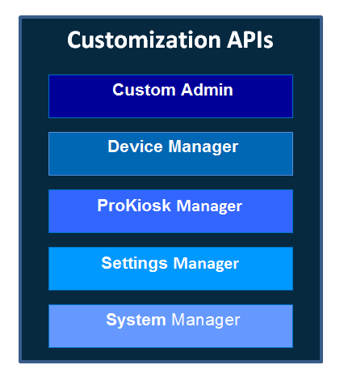

Customization features
The Customization APIs is a comprehensive set of tools that lets you develop purpose-built devices for vertical markets.
With the Knox Tizen Customization SDK, you can develop apps that customize the end user experience on Samsung wearable devices. You can control what apps users can access, and fully customize the device settings and operating system behavior for a particular app. You can lock down a wearable device to provide only one (or a few) apps, and prevent end users from leaving these apps to use the underlying device operating system or other pre-installed apps. This allows you to fully customize wearable devices to provide a controlled environment for targeted applications.
Customization API overview
The Knox Tizen SDK for Wearables - Customization APIs are grouped into following policy groups:

Features
- Custom Admin — This group provides APIs to register/de-register, and connect/release the Knox Custom client with the Knox Custom Server daemon.
- Device Manager — This group provides APIs related to device management to check the privileges granted to an app and the SDK version.
- ProKiosk Manager — These APIs control the end user experience on a device. You can map the device’s Home key to any activity, display items in the moment bar, hide notification messages, and so on.
- Settings Manager — These APIs control the settings on a device, such as network connectivity (Bluetooth, Wi-Fi, mobile data), hide or unhide settings items.
- System Manager — These APIs control other system behaviors, such as set the Bluetooth HID state, configure an app for the long-press of the physical back key.
For more details about what API features are available, see the API reference.
Develop an app using Customization APIs
The following are the steps to follow to develop an app using Customization APIs:
Before you begin:
Steps
- Add required privileges to the manifest file of your app, see License permissions.
- Register the MDM client, connect to server daemon, see Register MDM app.
- Register the Custom client, connect to server daemon, see Register the customization app.
- Activate the license keys, see Activate a license.
- Call the required Custom APIs, as shown in the API reference.
Register the custom client app
Register
For the Knox Custom client app to set or apply policies on the Gear device, you must first register the app.
To register the client app, call knox_custom_register_client (const char *pkg_name) API method.
int ret = KNOX_RESULT_SUCCESS;
ret = knox_custom_register_client("com.samsung.knox_custom_test_tool");
Once the app is registered, call knox_custom_get_service (void) or the knox_custom_get_service_ext (const char *pkg_name) to verify if the app is registered, and also to get the service from the Knox Custom server daemon.
int ret = knox_custom_get_service_ext("com.samsung.knox_custom_test_tool");
if (ret == KNOX_RESULT_SUCCESS) {
call Knox Custom APIs
}
knox_custom_release_service();
De-register
Call the knox_custom_deregister_client (const char *pkg_name) API method to de-register the client app.
The policies set by the client app will remain as is even if the app is de-registered that is, there will be no change in the state of Gear device.
Enable ProKiosk mode
To enable the ProKiosk mode, call knox_custom_set_prokiosk_state (knox_custom_prokiosk_state_t new_state, const char *passcode) API method, where passCode is the pass code that is needed to enable or disable the ProKiosk mode.
When ProKiosk mode is enabled the following are the default behaviours:
- All settings, items, notifications are hidden by default for the user.
- If the launcher application is not set in the homeactivity, the menu screen is displayed by default.
- The default display string for exiting is “ProKiosk mode”.
Customize home activity
Call the knox_custom_set_home_activity (const char *packagename, const char *clockpackagename) API method to set a specific package as a launcher application in the home activity.
For this version (Knox Tizen SDK for Wearables v1.0.0), default clock package is set as the clock in the home activity. It is not possible to modify the clock package.
knox_result_t setProkiosk = knox_custom_set_home_activity(packagename, NULL);
if (setProkiosk != KNOX_RESULT_SUCCESS) {
printf(stderr, "Cannot set HomeActivity");
} else {
printf("Knox_custom HomeActivity successfully set");
}
Customize device display
Call the knox_custom_set_hide_notification_messages() API method to show or hide notifications and the moment bar in ProKiosk mode.
knox_result_t setProkiosk = knox_custom_set_hide_notification_messages(state);
if (setProkiosk != KNOX_RESULT_SUCCESS) {
printf(stderr, "Cannot set the status of notification messages");
} else {
printf("Knox_custom Notification status is successfully set");
}
Customize exit UI
To exit the ProKiosk mode, long-press the physical menu key on the Gear device. The exit display string (button option) is displayed. You can customize the exit UI app and the string using the knox_custom_set_exit_ui() and knox_custom_set_prokiosk_string() API methods respectively.
knox_result_t setProkiosk = knox_custom_set_exit_ui(packagename);
if (setProkiosk = KNOX_RESULT_SUCCESS) {
printf("Exit UI package succesfully set");
knox_result_t setProkioskString = knox_custom_set_prokiosk_string(prokiosk_string);
if (setProkioskString = KNOX_RESULT_SUCCESS) {
printf("Knox_custom ProKiosk exit UI string successfully set");
} else {
printf(stderr, "Cannot set ProKiosk string");
}
} else {
printf(stderr, "Cannot set the exit UI package");
}
ProKiosk exit menu
To hide the ProKiosk exit menu in device options, call knox_custom_set_prokiosk_exit_menu ( knox_custom_prokiosk_exit_menu_state_t state ).
By default the ProKiosk exit menu will be visible in the device options.
knox_result_t setProkioskMenuHide = knox_custom_set_prokiosk_exit_menu(KNOX_CUSTOM_PROKIOSK_EXIT_MENU_HIDE);
if (setProkioskMenuHide != KNOX_RESULT_SUCCESS) {
printf(stderr, "Error in hiding the prokiosk exit menu");
} else {
printf("Prokiosk exit menu hidden successfully");
}
Create a custom booting animation
To replace the booting animation with a custom animation, the file type must be an EDJ file. Follow the instructions below to create an EDJ file:
Steps
-
Open Tizen Studio.
-
Select the application template Basic UI with EDC.
-
Open the project file.
-
Add images for animation to the image path.
The default path is
project_name/edje/images, you can modify the path from the EDC editor settings. -
Go to the local folder, and make an EDJ file by typing the command:
edje_cc -id ../images {project_name}.edc. temporary_name.edThe header file could also be set to include image files.
//project_name.edc file
images {
image: "/images/Tizen_power_on_01.png"
COMP;
image: "/images/Tizen_power_on_02.png"
COMP;
image: "/images/Tizen_power_on_03.png"
COMP;
image: "/images/Tizen_power_on_04.png"
COMP;
image: "/images/Tizen_power_on_05.png"
COMP;
image: "/images/Tizen_power_on_06.png"
COMP;
image: "/images/Tizen_power_on_07.png"
COMP;
image: "/images/Tizen_power_on_08.png"
COMP;
image: "/images/Tizen_power_on_09.png"
COMP;
image: "/images/Tizen_power_on_10.png"
COMP;
image: "/images/Tizen_power_on_11.png"
COMP;
}
collections {
group {
name: "poweron";
parts {
part {
name: "poweron";
mouse_events: 0;
description {
state: "default"
0.0;
image {
normal: "/images/Tizen_power_on_01.png"; //first and default image
tween: "/images/Tizen_power_on_02.png";
tween: "/images/Tizen_power_on_03.png";
tween: "/images/Tizen_power_on_04.png";
tween: "/images/Tizen_power_on_05.png";
tween: "/images/Tizen_power_on_06.png";
tween: "/images/Tizen_power_on_07.png";
tween: "/images/Tizen_power_on_08.png";
tween: "/images/Tizen_power_on_09.png";
tween: "/images/Tizen_power_on_10.png";
tween: "/images/Tizen_power_on_11.png";
}
visible: 1;
}
}
}
programs {
program {
name: "poweron";
signal: "show"; //start animation
action: STATE_SET "default"
0.0; //state for the image part
target: "poweron"; //part name
transition: LINEAR 4; //animation type and duration in seconds
after: "poweron_end";
}
program {
name: "poweron_end";
action: SIGNAL_EMIT "end"
"animation";
}
}
}
}
Booting animation file specifications
| POP/Solis | Memo | |
|---|---|---|
| Resolution | 360 X 360 | Gear POP/Galaxy S3 device resolution |
| Animation file size |
recommend 500K Max 1M |
Default Samsung booting animation size: approx. 200kb, as a black/white image. Carrier boot animation is normally between 500k to 1.5M. It is recommended to keep the file size between 500K to a maximum of 1M. |
| Animation play time | 4 ~ 6 sec | Default value: 4 sec |
| Frame rate |
20 ~ 30 frame (80 ~ 180 images) |
Frame rate and number of image |
| Image file format | PNG file | Create EDJ file using PNG files |
On this page
Is this page helpful?